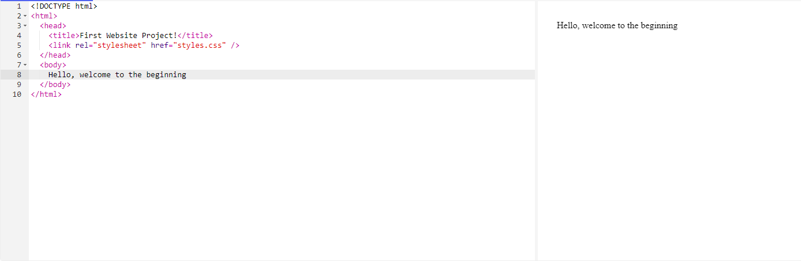
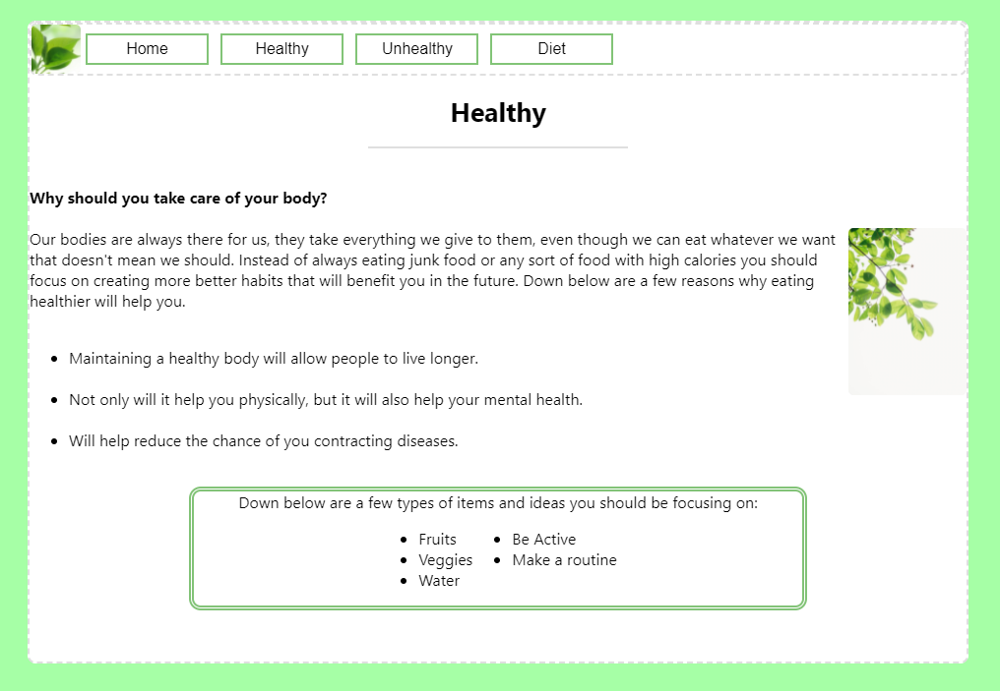

Design Process
- Before we get started creating our site, we first have to know what exactly
we're creating.
- To your left is a list of resources that have helped me out in the past whenever I've
been stumped. We will be using this a lot.
- The steps below are ones that we are going to follow before actually putting any work
on the website.
-Step 1:
Let's start off by creating our own little mini map. Creating a map is known as site mapping,
which will help us in the long run because it gets all of our ideas on to a document before
doing actual work.
- Step 2:
Already have an idea? Excellent this will make the entire process a whole ton easier I promise.
Now that that's handled how exactly are we going to create a website from scratch? We need to
figure out what langauge we want to construct our website on,for now we'll be using the langauge HTML
for this project. This language in my opinion is a really great langauge for starters.
- Okay great work, now that we have those out of the way we can finally learn how to use HTML.
- Remember, if you need any assistance then check out the resources tab on the right
to help guide you and either use a compiler or use Visual Studio Code
- Let's start by creating our head, title and body. Next, now's a good time to start creating
our navigation. We need a place for our consumers to be able to traverse through our website
with ease.

- Finished? Awesome, the next part comes information. Information is important especially
for our website, but we can't just put words on a screen and expect our guests to guess it in
their head. People want images, colors everywhere. Well not exacly everywhere, but they do want
a theme going on that supports what you are trying to convey to them.
Alright now that we got all of the information necessary on the page completed, it's now time to
decorate. By decorating your site it will look even better not only to you but also to your guests.
Nobody wants to look at a plain white screen with black text all day so add some style to it using
another tool in HTML called CSS. Brief lesson/reminder, CSS is used to well create styles in HTML,
it is also fairly simple to use but as a reminder if you need help you can use the links in the resource
box if need be.

So, how was it? Are you satisfied with what you created? It's quite alright if your first starting out.
At first it may seem hard due to being overwhelmed but over time it get's a lot easier.
Don't just take my word for it, pros were at one point amatuers. If you are even more interested in learning
more about web development, a good tip is to reach out to the professionals themselves. For this project
I was able to speak to Ashton Westrick from American Electric Power. Speaking to a professional is a good idea
since it gives you a bigger idea of what you do in this field. One last tip I would give is that
to not be afraid to make mistakes, mistakes can happen but they can also be fixed.